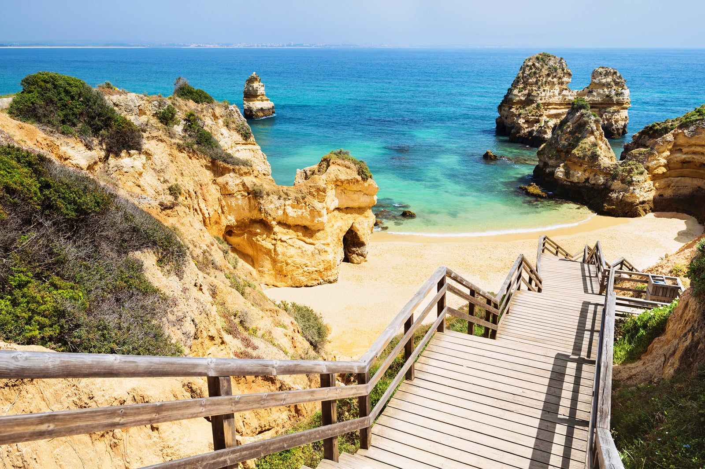

Descubre las mejores playas de Portugal
Portugal es famoso por sus costas impresionantes. Desde el sur hasta el norte, cada playa tiene su encanto único: aguas cristalinas, arenas doradas, acantilados y olas perfectas para el surf.

Algarve
El Algarve es el destino costero más popular de Portugal. Sus playas, como Praia da Marinha y Praia do Camilo, destacan por sus acantilados, cuevas y aguas cristalinas. Ideal para tomar el sol y practicar deportes acuáticos.

Nazaré
Famosa por sus olas gigantes, que pueden superar los 30 metros, Nazaré es un paraíso para surfistas profesionales. Además, el pueblo mantiene su encanto tradicional portugués con casas coloridas y gastronomía local.

Lisboa y Costa de Caparica
A poca distancia de la capital, las playas de Costa da Caparica y Praia do Guincho ofrecen arenas extensas y un ambiente perfecto para relajarse, tomar el sol y disfrutar de la vida marítima local.

Playas del norte de Portugal
En el norte, las playas como Matosinhos y Moledo son menos turísticas, con paisajes tranquilos, ideales para paseos, surf y disfrutar de la naturaleza.
Consejos para visitar las playas
- Evita la temporada alta (julio-agosto) si buscas tranquilidad.
- Lleva siempre protector solar y agua.
- Respeta las señales de seguridad y corrientes peligrosas.
- Prueba los restaurantes de pescado fresco junto a la costa.
- Explora calas escondidas y acantilados para fotos espectaculares.